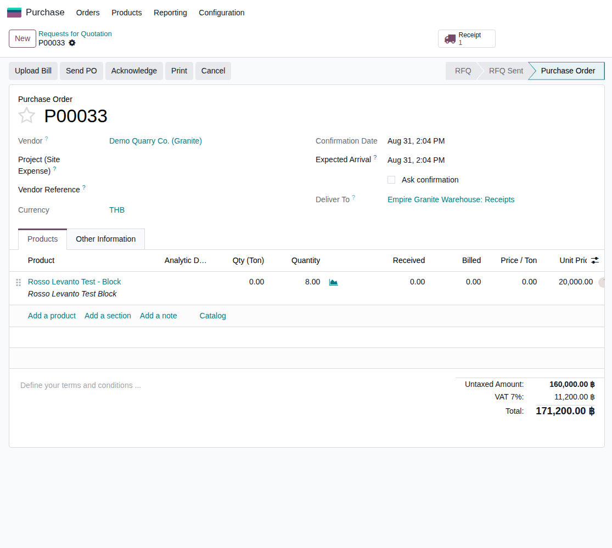
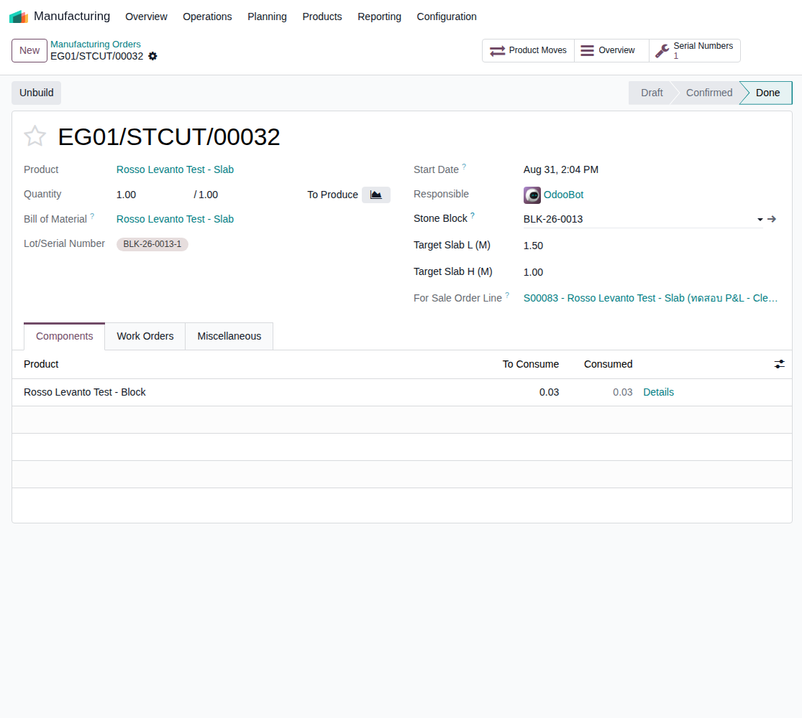
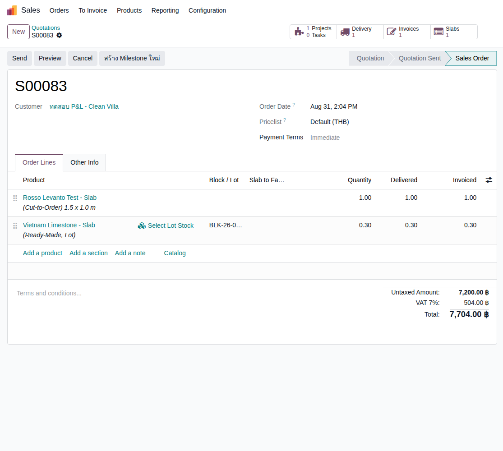
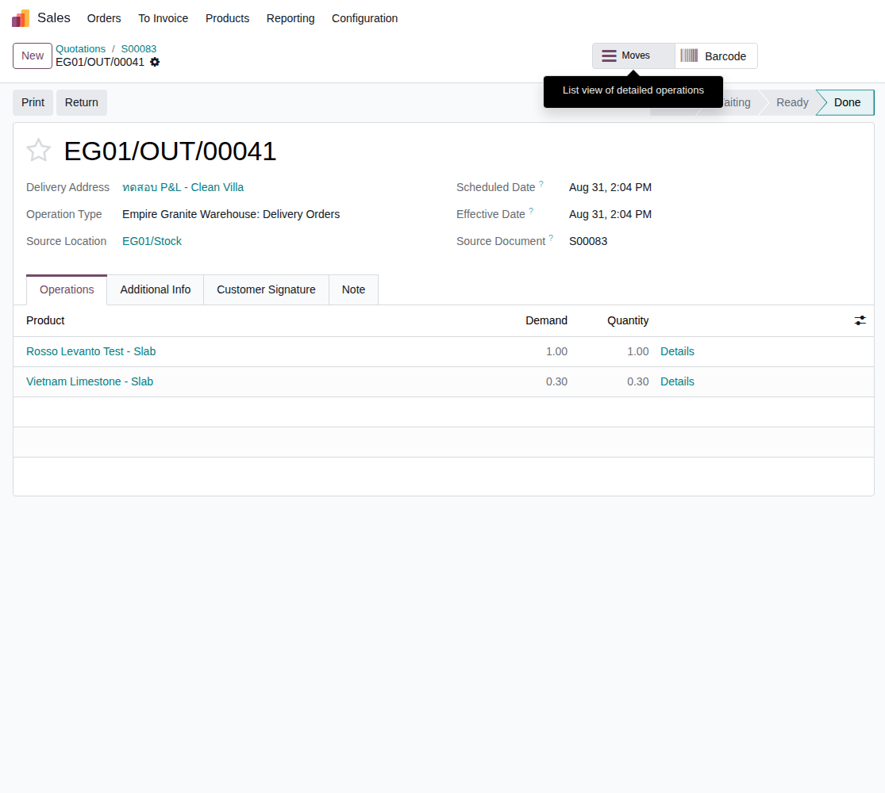
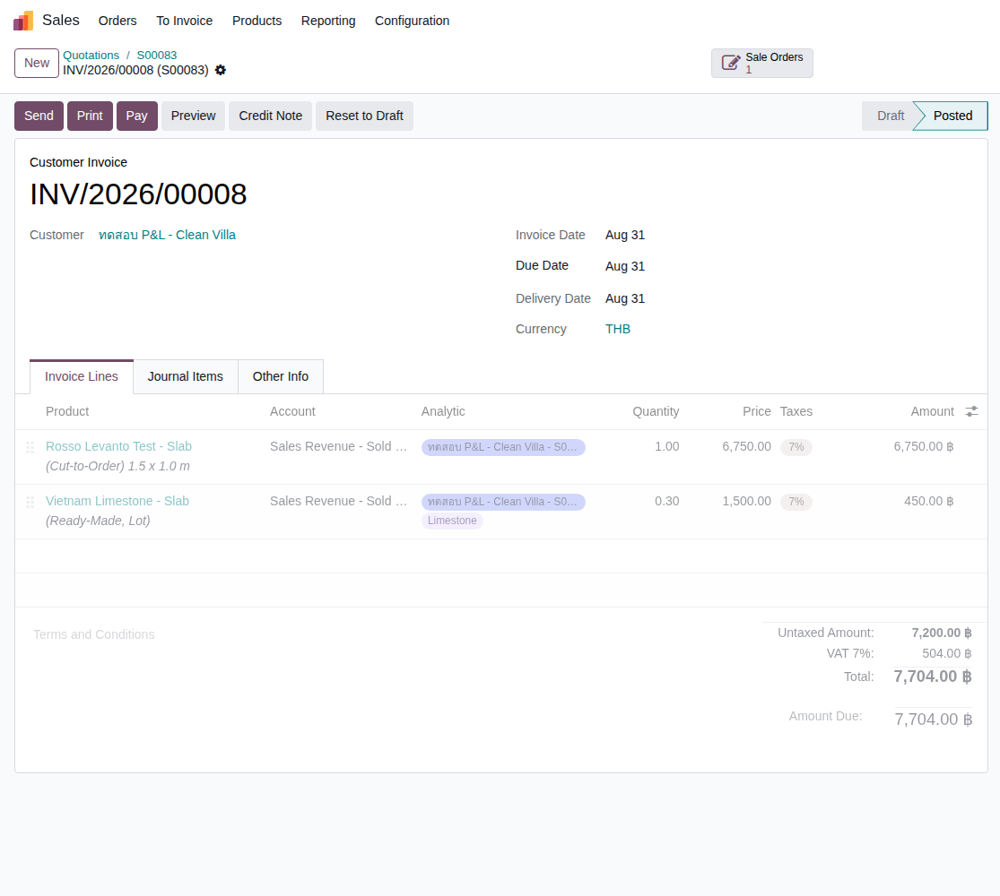
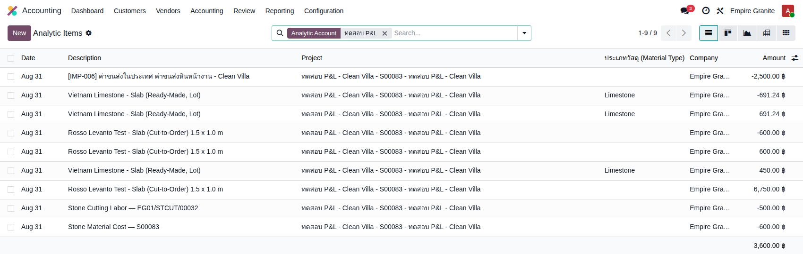
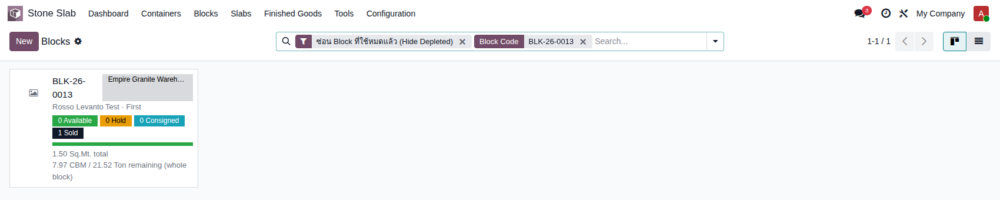
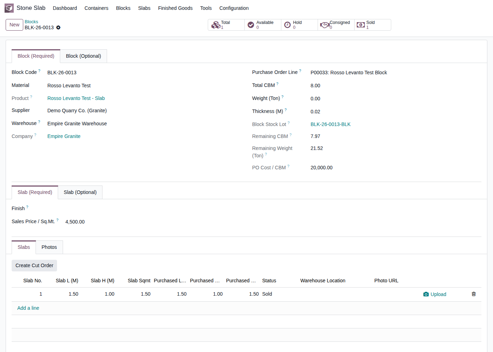
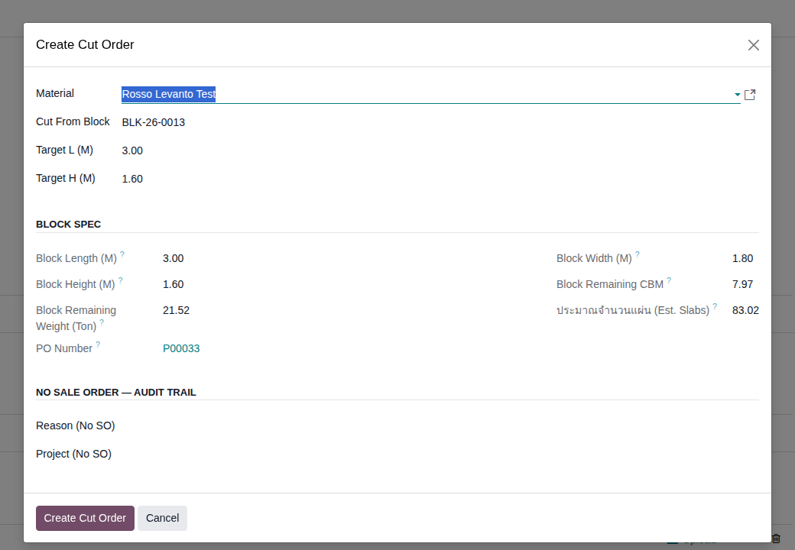

COST
Empire Granite · Stone Slab Inventory — Design Discussion
ต้นทุนหิน: จากก้อนสู่แผ่น
อธิบายง่ายๆ แล้วดูของจริงในระบบเรา
เริ่มจากหลักการบัญชีต้นทุนแปรรูปพื้นฐาน (ทำไมไม่นับต้นทุนซ้ำ) ด้วยตัวอย่างง่ายๆ จากนั้นไล่ทีละขั้นพร้อมภาพหน้าจอจริงจากระบบ EMG-O — ตามรอย Block เดียวกัน (BLK-26-0013) ตั้งแต่ซื้อจนถึงขาย
EMG-O Design Discussion · Stone Costing Explainer
หลักการพื้นฐาน
ต้นทุนไม่ได้ถูก "บวกเพิ่ม" — แค่ถูก "ย้ายกระเป๋า"
?
คำถามที่พบบ่อย
ซื้อหินก้อนมา 100 บาท พอตัดเป็นแผ่นแล้ว ทำไมต้อง "บันทึกต้นทุน 100 บาท" อีกรอบในบัญชีสินค้าสำเร็จรูป — นี่คิดซ้ำซ้อนหรือเปล่า?
วัตถุดิบ
ซื้อหินก้อนมา 100 บาท
เงินอยู่ตรงนี้
→
★ ย้าย ไม่ใช่บวก
สินค้าสำเร็จรูป
ตัดเสร็จ ย้ายเงิน 100 บาท
มาอยู่ตรงนี้แทน
→
ต้นทุนขาย
ขายได้แค่ไหน
ย้ายเฉพาะส่วนนั้นมาที่นี่
จุดสำคัญ: เงิน 100 บาทก้อนเดิม แค่เปลี่ยนที่อยู่ไปเรื่อยๆ ตามสถานะของสินค้า ไม่เคยถูกนับเป็น 2 เท่าที่จุดไหนเลย
ตัวอย่างตัวเลข
ซื้อ 100 บาท ตัดได้ 10 แผ่น ขายไป 5 แผ่น
฿
โจทย์
หินก้อน 100 บาท ตัดได้หินแผ่น 10 แผ่น (ต้นทุนแผ่นละ 10 บาท) ขายไปแล้ว 5 แผ่น แผ่นละ 200 บาท
| รายการ | จำนวน | มูลค่า |
|---|
| รายได้จากการขาย | 5 แผ่น × 200 | 1,000 บาท |
| หัก ต้นทุนขาย (เฉพาะ 5 แผ่นที่ขายไปแล้ว) | 5 แผ่น × 10 | (50 บาท) |
| กำไรขั้นต้น | | 950 บาท |
| สินค้าคงเหลือในคลัง (อีก 5 แผ่นที่ยังไม่ขาย) | 5 แผ่น × 10 | 50 บาท |
ต้นทุนที่ตัดเป็นค่าใช้จ่ายแล้ว (50) + ต้นทุนที่ยังค้างในคลัง (50) = 100 บาทพอดี ไม่ขาดไม่เกินจากที่จ่ายซื้อจริง
สรุปหลักการ
จำแค่ 2 กระเป๋า: "ยังไม่ขาย" กับ "ขายแล้ว"
กระเป๋าที่ 1 — สินค้าคงเหลือ
ของยังอยู่ในคลัง ยังไม่ขาย
เป็นสินทรัพย์ — เงินต้นทุนยังจมอยู่ในรูปสินค้า ยังไม่กระทบกำไรขาดทุนใดๆ ในงบการเงิน
กระเป๋าที่ 2 — ต้นทุนขาย
ของถูกขายออกไปแล้ว
เป็นค่าใช้จ่าย — ต้นทุนของชิ้นที่ขายได้ ถูกย้ายมาหักกับรายได้เพื่อคำนวณกำไรจริง
กติกาเดียว: ต้นทุนจะย้ายจากกระเป๋าซ้ายไปขวา ก็ต่อเมื่อของถูกขายออกจริงเท่านั้น — ไม่ใช่ตอนซื้อ ไม่ใช่ตอนตัดแปรรูปเสร็จ
ต่อไปนี้ คือของจริง
ไล่หลักการเดียวกันนี้ทีละขั้น พร้อมภาพหน้าจอจริงจากระบบ
◆
ของจริง ไม่ใช่ตัวอย่างสมมติ
ทุกภาพหน้าจอต่อจากนี้ มาจาก Block เดียวกันจริงๆ ในระบบ — รหัส BLK-26-0013 วัสดุ "Rosso Levanto Test" ซื้อจริง ตัดจริง ขายจริง ผ่าน Sale Order S00083 ไม่ใช่ข้อมูลจำลองหรือ mock-up
ซื้อ Block→
ตัด (MO)→
ขาย + ส่งมอบ→
ออกใบแจ้งหนี้ + ตัดต้นทุนขาย
ขั้นที่ 1 — ซื้อวัตถุดิบ
กระเป๋าใบที่ 1: ซื้อ Block เข้าคลัง
ขั้นตอนที่ 1 / 6
ใบสั่งซื้อจริง P00033 — ซื้อ Block "Rosso Levanto Test" จำนวน 8.00 CBM ราคา 20,000 บาท/CBM รวม 160,000 บาท
สังเกตคอลัมน์ Qty (Ton) คู่กับ Quantity (CBM) — ทั้งสองหน่วยมีให้กรอก แต่ตัวที่ระบบใช้คำนวณราคาจริงคือ CBM (Unit Price ตั้งไว้เป็นบาท/CBM)

🔍 คลิกดูขยาย
ขั้นที่ 2 — ตัดแปรรูป
ย้ายจากวัตถุดิบ → สินค้าสำเร็จรูป ผ่าน Manufacturing Order
ขั้นตอนที่ 2 / 6
Cut Order จริง EG01/STCUT/00032 — ตัดแผ่นขนาด 1.5 × 1.0 ม. จาก Block เดิม ใช้ Block ไป 0.03 CBM เท่านั้น (จาก 8 CBM ทั้งก้อน)
นี่คือจุด "ย้ายกระเป๋า" ตามที่อธิบายในสไลด์ก่อนหน้า — ต้นทุนของ 0.03 CBM นี้ย้ายจากบัญชีวัตถุดิบไปเป็นต้นทุนของแผ่นที่เพิ่งตัดเสร็จ ส่วนอีก 7.97 CBM ที่เหลือยังอยู่ในบัญชีวัตถุดิบเดิม (ดูสไลด์ถัดไป)

🔍 คลิกดูขยาย
ขั้นที่ 3 — ขาย
ขายแล้ว แต่ต้นทุนยังไม่ตัด จนกว่าจะส่งมอบจริง
ขั้นตอนที่ 3 / 6
Sale Order จริง S00083 ขายแผ่นที่เพิ่งตัดเสร็จ ราคา 6,750 บาท (พร้อมสินค้าอีกชิ้น "Vietnam Limestone" รวมยอด 7,704 บาท)
ตอนนี้ยืนยันการขายแล้ว (Delivered = 1.00) แต่ตามหลักการ "2 กระเป๋า" ต้นทุนยังไม่ถูกย้ายไปกระเป๋าต้นทุนขายจนกว่าการส่งมอบจะเสร็จสมบูรณ์จริง — ดูขั้นถัดไป

🔍 คลิกดูขยาย
ขั้นที่ 4 — ส่งมอบ (จุดตัดต้นทุนขายจริง)
พอส่งมอบเสร็จ ตรงนี้แหละคือจุด "ย้ายกระเป๋า" จริง
ขั้นตอนที่ 4 / 6
ใบส่งของจริง EG01/OUT/00041 สถานะ Done — อ้างอิงกลับไปที่ S00083 ต้นทาง EG01/Stock
ระบบ Odoo ที่เราใช้จะสร้างรายการบัญชี (Journal Entry) อัตโนมัติ ณ จุดนี้พอดี — ตัดต้นทุนออกจากบัญชีสินค้าคงเหลือ ย้ายเข้าบัญชีต้นทุนขาย ตรงตามหลักการที่อธิบายไปตั้งแต่ต้น ไม่มีขั้นตอนพิเศษเพิ่มเติม

🔍 คลิกดูขยาย
ขั้นที่ 5 — ออกใบแจ้งหนี้
แต่ละบรรทัดผูก Analytic Tag ไว้ตั้งแต่ต้น
ขั้นตอนที่ 5 / 6
ใบแจ้งหนี้จริง INV/2026/00008 — สังเกตคอลัมน์ Analytic ทางขวาของแต่ละบรรทัด ผูกกับโปรเจกต์ลูกค้ารายนี้โดยอัตโนมัติ
การผูก Analytic ต่อบรรทัดแบบนี้ คือกลไกที่ทำให้แยกดูกำไร/ต้นทุนเป็นรายโปรเจกต์ได้ — เห็นผลจริงในสไลด์ถัดไป

🔍 คลิกดูขยาย
ขั้นที่ 6 — ค่าแรงตัด แยกออกจากต้นทุนวัตถุดิบ
ต้นทุนวัตถุดิบ กับ ค่าแรงตัด เป็นคนละบรรทัดชัดเจน
ขั้นตอนที่ 6 / 6
Analytic Items ของโปรเจกต์นี้ทั้งหมด — เห็น "Stone Material Cost — S00083" -600 กับ "Stone Cutting Labor — EG01/STCUT/00032" -500 เป็น 2 บรรทัดแยกกันชัดเจน ไม่ปนกัน
ตรงตามที่อธิบายไปก่อนหน้า — ค่าแรงเป็นค่าประมาณ (ยังไม่เคยจับเวลาทำงานจริง) จึงถูกกันไม่ให้ปนกับต้นทุนวัตถุดิบจริงในมูลค่าสินค้าคงคลัง แต่ยังโชว์แยกไว้ที่นี่เพื่อดูกำไรโครงการได้ครบ

🔍 คลิกดูขยาย
จุดต่าง #1 — หน่วยตั้งต้นของต้นทุน
CBM คือหน่วยตั้งต้น ส่วนตันเป็นแค่ตัวเลขคำนวณย้อนกลับ
การ์ดสรุปของ Block เดียวกันนี้ ในหน้ารายการ Blocks — แสดงทั้ง 7.97 CBM และ 21.52 Ton remaining พร้อมกัน
ก้อนหินจริงมีรูปทรงไม่สม่ำเสมอ ชั่งน้ำหนักแล้วต้องเดาผ่านค่าความหนาแน่นเฉลี่ยถึงจะรู้ปริมาตร — ระบบเราจึงใช้ CBM (ปริมาตรจริงจาก PO) เป็นหน่วยตั้งต้นของต้นทุนโดยตรง ส่วนตันเป็นแค่ตัวเลขแปลงกลับไว้ดู ไม่ใช่ตัวขับเคลื่อนราคา

🔍 คลิกดูขยาย
รายละเอียดเต็มของ Block เดียวกัน
ทุกตัวเลขต้นทุน คำนวณจาก CBM ตรงๆ ผ่านความหนา
ฟอร์มเต็มของ Block BLK-26-0013 — Total CBM 8.00, ความหนา 0.02 ม., PO Cost/CBM 20,000 บาท, เหลืออยู่จริง Remaining CBM 7.97
ปริมาตร = พื้นที่ × ความหนา — ต้นทุนต่อตารางเมตรจึงคำนวณจาก PO Cost/CBM คูณความหนาตรงๆ ไม่ต้องผ่านการเดาความหนาแน่นเลย

🔍 คลิกดูขยาย
จุดต่าง #2 — ก้อนหินที่เหลือจากการตัด
ไม่ต้องปันส่วนต้นทุนแยกเป็นสินค้าใหม่
เทคนิคทั่วไปที่รู้จักกัน
ถ้าตัดแล้วได้สินค้า 2 ชนิด (เช่น แผ่น + เศษก้อนที่ขายแยกได้) หลักบัญชีจะปันส่วนต้นทุนตามสัดส่วนมูลค่าขายของแต่ละชนิด — เทคนิคที่ถูกต้องและมีประโยชน์จริงในกรณีนั้น
Block เดียวกันนี้ พิสูจน์ว่าไม่ต้อง
จากสไลด์ก่อนหน้า — Block นี้มี 8.00 CBM ใช้ตัดไปแค่ 0.03 CBM ที่เหลืออีก 7.97 CBM คืนกลับเข้าคลังเป็น Block เดิม ชนิดเดิม เฉยๆ ไม่ได้ถูกแยกเป็นสินค้าใหม่ที่ต้องปันส่วนมูลค่าใดๆ
เก็บเทคนิคปันส่วนตามมูลค่าขายไว้เป็นเครื่องมือสำรอง — ถ้าในอนาคตมีกรณีขายเศษ/ก้อนเล็กแยกเป็นสินค้าจริง ค่อยนำมาสร้างกลไกนี้เพิ่ม ไม่จำเป็นต้องสร้างไว้ล่วงหน้าตอนยังไม่มี use case จริง
สิ่งที่ควรปรับเพิ่ม
ยังไม่มี "ตัวคูณสูญเสียจากการตัด" (Yield / Wastage Factor)
เปิดหน้าต่างสร้าง Cut Order ใหม่บน Block เดียวกันนี้ (7.97 CBM เหลือ) กำหนดขนาดเป้าหมาย 3.00 × 1.60 ม. — ระบบประมาณ "Est. Slabs" ให้ 83.02 แผ่น
ปัญหา: 83.02 คำนวณจาก ปริมาตรที่มี ÷ ปริมาตรต่อแผ่น แบบทฤษฎี 100% ยังไม่หักความหนาใบเลื่อย (kerf) หรือการเจียหน้าออกเลย — ตัวเลขจริงหลังตัดจะได้น้อยกว่านี้เสมอ

🔍 คลิกดูขยาย
ข้อเสนอ: เพิ่มเปอร์เซ็นต์ยอมรับการสูญเสีย (ตามชนิดหิน/ความหนา) เข้าไปในขั้นตอนประมาณการนี้ เพื่อให้ตัวเลขที่พนักงานเห็นก่อนตัดใกล้เคียงจำนวนแผ่นที่ได้จริงมากขึ้น — ไม่กระทบต้นทุนที่บันทึกจริงหลังตัดเสร็จ ซึ่งถูกต้องอยู่แล้ว (คำนวณจาก CBM ที่ใช้จริง ไม่ใช่ตัวเลขประมาณการนี้)
ภาคผนวก
หลักฐานจากโค้ดจริง
สำหรับทีม
อ้างอิงตรงจากไฟล์จริงในโมดูล stone_slab_inventory (EE branch) — ไม่จำเป็นต้องนำเสนอให้ลูกค้าดูในรอบปกติ
อ้างอิงไฟล์จริง
แต่ละจุดที่พูดถึง เห็นได้จากไฟล์เหล่านี้
| เรื่อง | ไฟล์ | สิ่งที่เกิดขึ้นจริงในโค้ด |
|---|
| ค่าแรงถูกแยกออก |
mrp_production.py |
_cal_price() override strip ค่าแรง workcenter ออกจากมูลค่า Slab ที่โพสต์ลง GL เหลือแค่ material cost จาก consumed moves — ค่าแรงไปโพสต์แยกผ่าน _post_stone_labor_cost() (Analytic/Accrued Expense) แทน |
| CBM เป็นหน่วยตั้งต้น |
stone_bundle.py |
_compute_po_cost_sqmt(): po_cost_sqmt = po_cost_cbm × thickness_m — แปลงตรงจากปริมาตร ไม่ผ่านน้ำหนัก/density เลย |
| ก้อนเหลือคืนเป็น Block เดิม |
mrp_production.py |
_stone_return_leftover_block() คืน CBM ที่เหลือกลับเข้า Stone Available location ด้วย product/lot เดิม ไม่สร้างสินค้าใหม่ |
| Yield factor ยังไม่มี |
stone_cut_order_wizard.py |
comment บรรทัด 46 ระบุตรงๆ: "Rough estimate only — remaining CBM ÷ target size — does not account for saw blade kerf loss" |